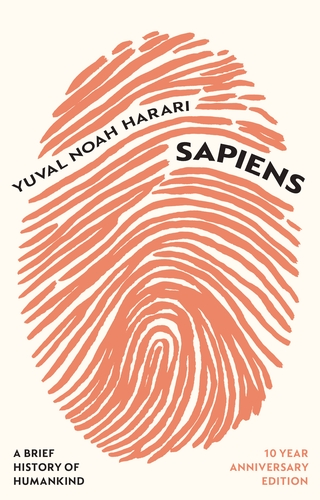
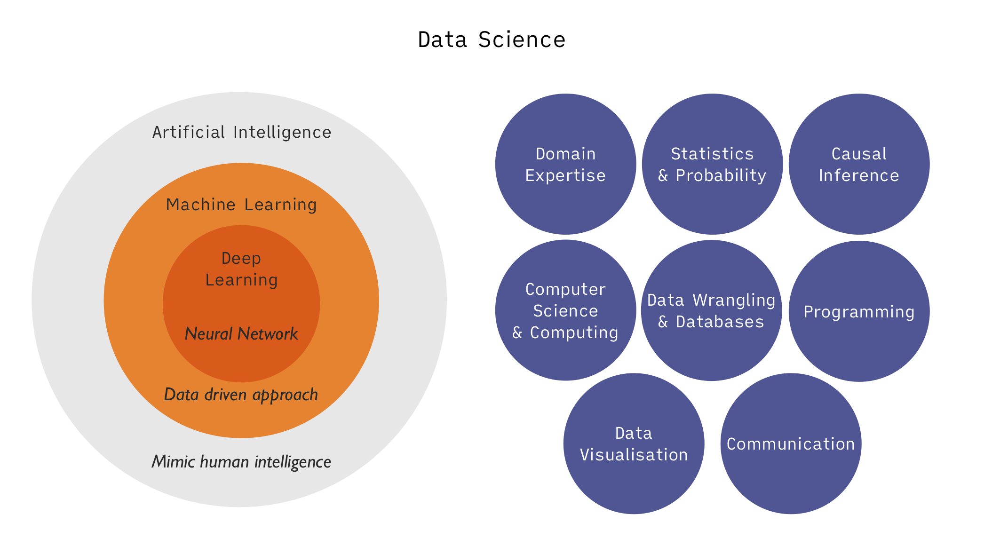

개관
미래 데이터의 중요성
4차 산업혁명의 ‘원유’
- 다양한 소스들로부터 데이터 생성: 전지구적 개인과 환경에 대한 상세한 정보 발생
- 인터넷 & 통신 (SNS, 사진, 위치, 장소, 유동인구, 상품거래, 물류)
- 사물인터넷 (IoT), CCTV
- 스마트 팩토리, 파밍
- 게놈프로젝트, 생체정보, 의료/보건: 인류, 실시간
- 과학적 발견: 물리법칙의 발견, 약물의 합성, 생체 내 상호작용의 메커니즘 규명
- 자율주행차량: 내부, 외부
- 금융정보 및 흐름
- 사회 지표 활용: 고용, 직업, 연봉, 만족도 조사, 취약 계층, 우울
- 생성형 인공지능: 기계의 정보 생산
- AI companion: 개인 내면에 대한 정보
사회적 파장
유토피아 vs. 디스토피아
- 초연결성, 투명성 vs. 완전한 감시와 통제
- 개인화된 서비스 vs. 설득/유혹/조작
- 개별성/자율성 vs. 피동적/비주체적
- 기계와의 교감 vs. 인간관계의 소외, 현실과의 단절
- 정보와 인간에 대한 신뢰 약화와 사회적 연대, 문명 붕괴
- 자연과의 조화 vs. 생태계의 파괴



Yuval Noah Harari: An Urgent Warning They Hope You Ignore.
The Social Dilemma (2020)
Netflix documentary
Data Science
- Artificial intelligence (인공 지능)
- Machine learning (기계 학습)
- Deep learning (심층 학습)
- Data mining (데이터 마이닝)
- Statistical Learning (통계적 학습)
소프트웨어 개발
데이터에 기반한 분석 위해 작동하도록 프로그래밍을 하여 운영되도록 하는 일
주로 전통적인 컴퓨터 사이언스의 커리큘럼에 의해 트레이닝
- 유튜브의 영상 추천
- 페이스북의 친구 매칭
- 스팸메일 필터링
- 자율주행
데이터 분석
하나의 구체적인 질문에 답하고자 함
다양한 소스의 정제되는 않은 데이터를 통합하거나 가공하는 기술이 요구
- DNA의 분석을 통해 특정 질병의 발병 인자를 탐색
- 유동인구와 매출을 분석해 상권을 분석
- 어떤 정책의 유효성을 분석에 정책결정에 공헌
- 교통 흐름의 지연이 어떻게 발생하는지를 분석, 해결책 제시
Skills

- Domain knowledge
- 해결하려는 문제에 대한 이해없이 단순한 알고리즘만으로 “one size fits all”은 효과적이지 않음
- 추상화된 현실에 대한 모형은 수많은 가정/사전 지식(prior knowledge)을 전제하고 있음.
- 각 분야의 전문 지식은 데이터가 발생되는 과정, 데이터의 특성, 데이터의 의미를 이해하는데 필수적
- Ethics
- 데이터를 합법적이고 적절하게 사용하려면 규정을 이해하고, 자신의 업무에 미치는 영향과 사회에 미치는 파급력 대한 윤리적 이해가 필요
- 배출(exhaust) 데이터: 어떤 목적을 가진 데이터 수집 프로세스로부터 얻어진 부산물
- 소셜 미디어: 사용자가 다른 사람들과 소통할 수 있도록 도움
- 공유된 이미지, 블로그 게시물, 트윗, 좋아요 등으로부터
- 누가/얼마나 많이 보았는지/좋아요/리트윗을 했는지 등을 수집
- 아마존 웹사이트: 다양한 물건을 편리하게 구매할 수 있도록 도움
- 사용자가 장바구니에 어떤 품목을 담았는지, 사이트에 얼마나 오래 머물렀는지, 어떤 다른 품목을 보았는지 등을 수집
- 메타데이터(metadata)
- 통화 내역만으로 많은 민감한 정보을 유추할 수 있음
- 알코올 중독자 모임, 이혼 전문 변호사, 성병 전문 병원 등
- 소셜 미디어: 사용자가 다른 사람들과 소통할 수 있도록 도움
- 한편, 서비스와 마케팅을 타겟팅할 수 있는 잠재력
- 배출(exhaust) 데이터: 어떤 목적을 가진 데이터 수집 프로세스로부터 얻어진 부산물
- 데이터를 합법적이고 적절하게 사용하려면 규정을 이해하고, 자신의 업무에 미치는 영향과 사회에 미치는 파급력 대한 윤리적 이해가 필요
- Wrangling
- 데이터 소스는 다양한 형식으로 존재
- 통합, 정리, 변환, 정규화 등의 작업이 요구
- data munging, data wrangling, data cleaning, data preparation, data preprocessing 등으로 불림
- Database & computer science
- 수집된 데이터가 저장되고, 가공/추출된 데이터의 재저장 등 데이터베이스와의 소통할 수 있는 기술
- 다양해지고 방대해진 빅데이터를 저장/배포하기 위한 도구를 활용
- ML 모델을 이해하고 개발하여 제품의 출시, 분석, 백엔드 애플리케이션에 통합할 수 있는 기술 등
- Visualisation
- 작업 프로세스의 모든 과정에 관여
- 데이터를 탐색하거나,
- 데이터의 의미를 효과적으로 전달
- 작업 프로세스의 모든 과정에 관여
- Statistics & Probability
- 데이터 과학 프로세스 전반에 걸쳐 사용됨
- 초기 수집과 조사
- 다양한 모델과 분석의 결과를 해석
- 의사결정에 활용
- 데이터 과학 프로세스 전반에 걸쳐 사용됨
- Machine Learning
- 데이터로부터 패턴을 찾기 위한 다양한 알고리즘을 사용
- 응용 측면에서는
- 수많은 알고리즘에 대해 가정, 특성, 용도, 결과의 의미, 적용가능한 유형의 데이터 등
- 해결할 문제와 데이터에 가장 적합한 알고리즘을 파악
- Communication
- 데이터에 담긴 스토리를 효과적으로 전달하는 능력
- 분석을 통해 얻은 인사이트, 조직 내 목적에 어떻게 부합하는지, 조직의 기능에 미칠 수 있는 영향 등